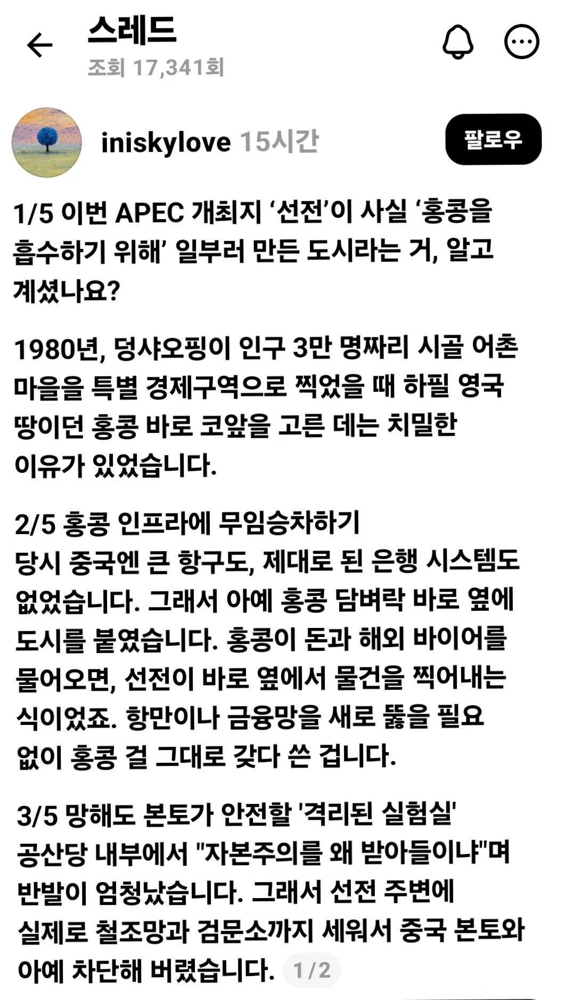
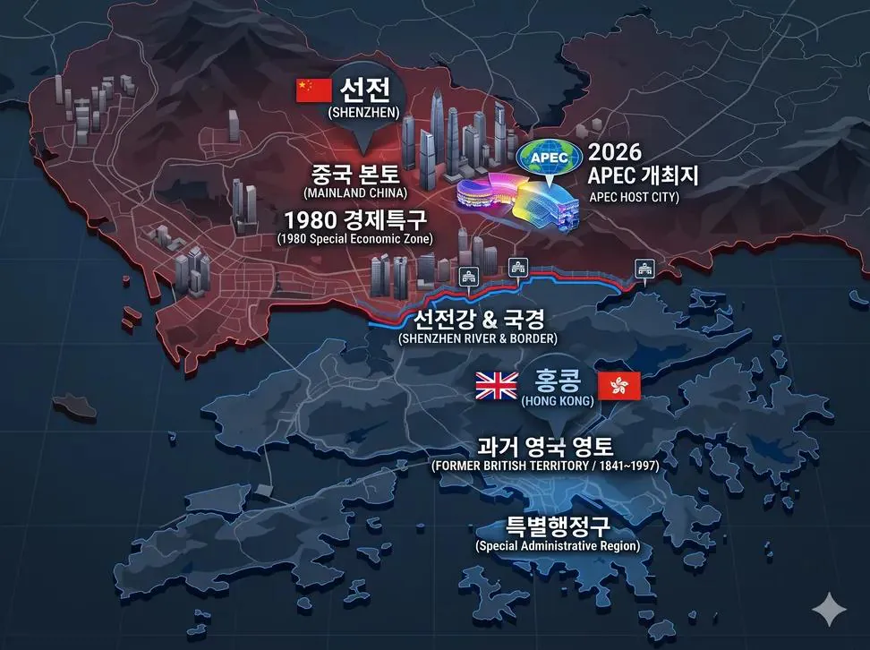
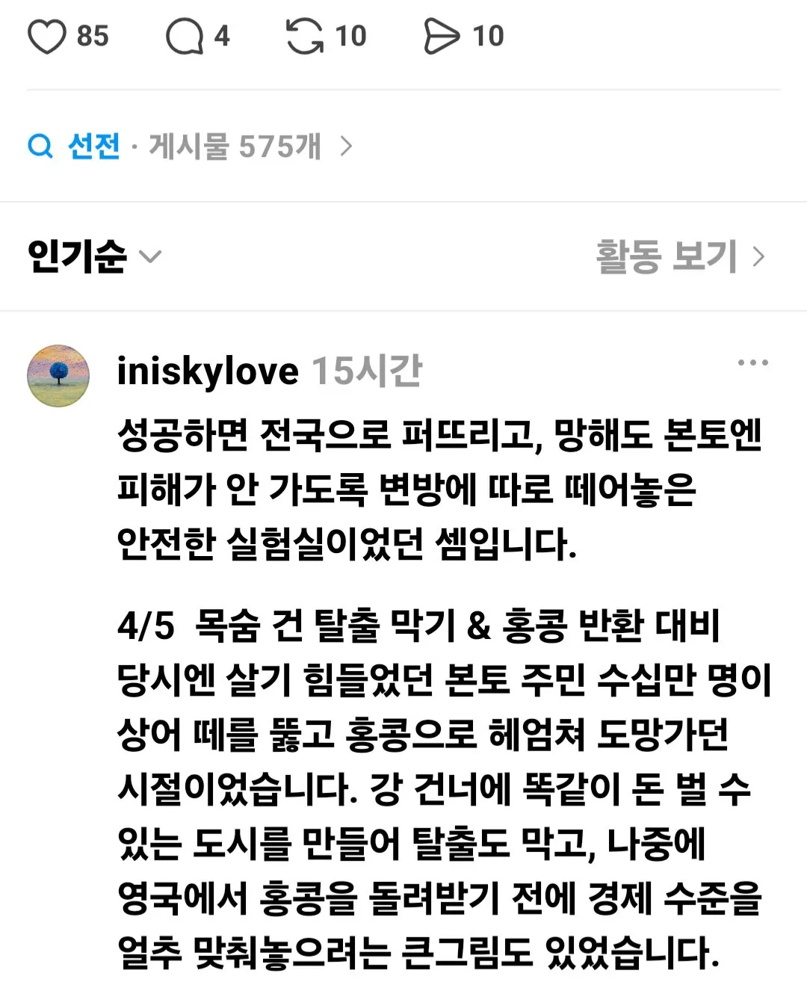
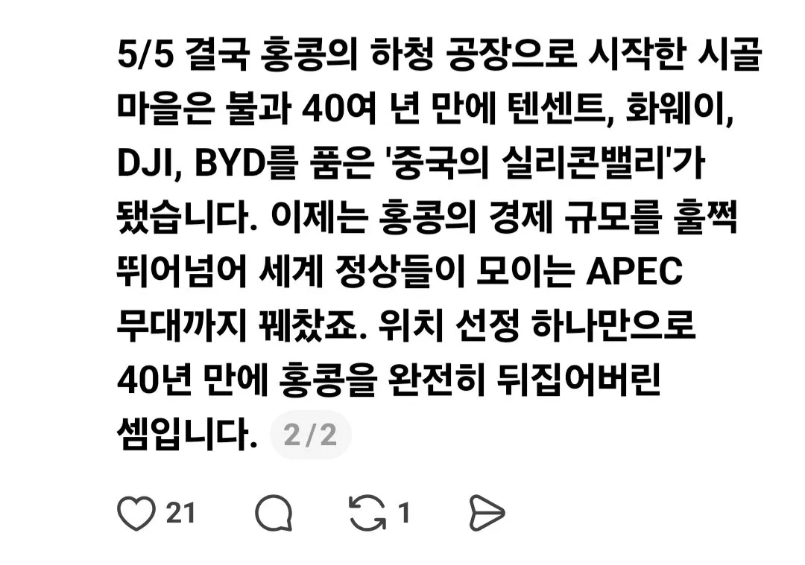
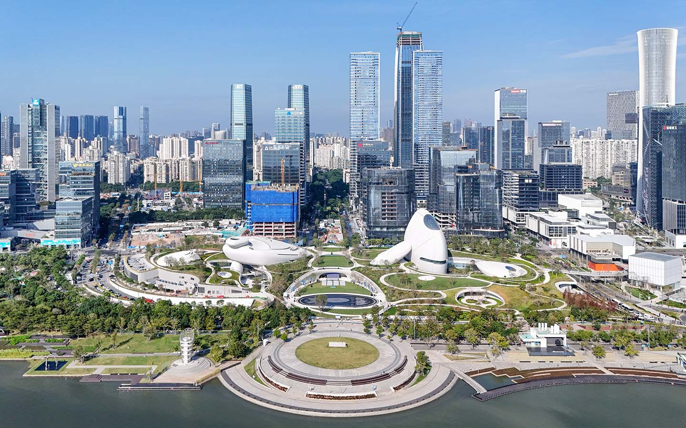

공산당새끼들 중국역사 몇천년간 왕조가 어떻게 흥하고 망하는지 학습했고 이미 통치하는데 적용이 끝난상태임 간단하게 예를들면 중국에서 종교를 개인적으로는 허용하지만 단체로는 절대불가인 이유가 역대왕조가 망하는게 쐐기를 꽂은게 종교단체가 들고일어나서임 독립은 쉽지 않을듯
황건적 ㅋㅋㅋㅋ
창천이사 황천당립 ㄷㄷ
개개인의 종교는 억압안하는 이유도 있겠지
푸른 하늘이 사라지고...누런 하늘이 서리라..?
장각 센세... 1824년 전에 이미 중국 대기 오염을 예측하셨다니...
홍콩을 흡수하기 위한 도시라기보다 걍 홍콩 인프라를 활용할 도시지 뭐.....경기도에 있는 대부분의 도시가 서울 인프라/일자리를 이용하기 위해서 사람들이 모이며 발전하는 것처럼
그리고 홍콩도 물이랑 전기를 선전에서 공급받기도하고. 홍콩 혼자서는 자급자족이 안 됨. 발전소 지을 땅도 없고 바닷물 정수해서 마시는 것도 여건상 힘들고
말레이시아가 싱가포르 먹으려고 조호르바르 지었다 랑 동급의 이야기
더운거 빼곤 살기 꽤나 좋았음
선전으로 넘어가는 순간 물가 확떨어지더라 화창베이 구경도 재밌었음
진짜 홍콩 티베트 사람들 개불쌍한데
뭐 해줄수 있는게 없네
어떻게 도시 이름이 프로파간다
선전갔다가 서울와보니 서울이 개깡촌같았음
선전이 선전해줬어야 선전이 됐을텐데 선전하지 못해서 아쉬웠는데 이번에 제대로 선전이 됐으면 좋겠네요
굿
딱 두개가 반복될뿐이네
선전이 중국내에서도 최첨단 도시라고 불릴정도로 중국의 모든 IT 집약체임
와.. 전형적인 AI문체인데
내용이 이제 다 맞는 말만 하네
선전 충칭은 한번은 가보고싶은데 준비가 어려워
저긴 진짜 신도시더라 여행유튜브 보는데
중국입장에선 꽤 좋은 수를 둔거 아닌가.
홍콩이 가지는 리스크는 통제하고
단물은 쪽 빨아먹고싶고
선전은 출장으로 가도 좆같지가 않음 음식 선택지가 많아서
10년전까지만 해도 하청 수준이었는데 진짜 엄청 빠르게 변했음
선전 ㅅㅂ 출장가서 저기 4성급 호텔을가도 좆같음.
로비랑 객실까지는 호화로운데, 호텔 나오는 순간 바로 앞이 비포장 도로인 곳이 수두룩함.
그냥 협력업체 직원 차타고 생산처랑, 호텔 와리가리 하다가 1주일 끝남.
주변에 아무것도 없음.
미친놈들이 밤에 호텔방으로 여자집어넣더라. 좆까고 걍 잠.
무조건 호텔 조식으로 배채우고, 밖에서 고급식당 가도 입에 안맞아서 대충 때워야함.
머리좋네 선전이 저기였구만
드론이 미치긴했던데
심천이 진짜 좆되긴 함....
선전이 진짜 기술력 ㅈ되는 도시라던데
한번은 가보고싶네
위치선정 하나만으로라니 ㅋㅋ
진짜 개같이 더움
뭐 대단하게 홍콩을 흡수하기 위해서가 아니라 홍콩 떡고물 받으려고 만든거지.. 과거 우리나라 마산수출자유구역 같은 경우도 보세구역이라 외부와 차단되어 있었고 보안검사도 까다로웠잖아. 물론 선전은 시범구역같은 개념도 있었지만... 그러다가 성장해서 홍콩을 따잇한거지 뭐.
그러기엔 선전이 이젠 ㄴ홍콩하고 비교하기 어려울정도로 발전된거 아닌가
그럼 선전 독립외치는 길만 남았네 ?